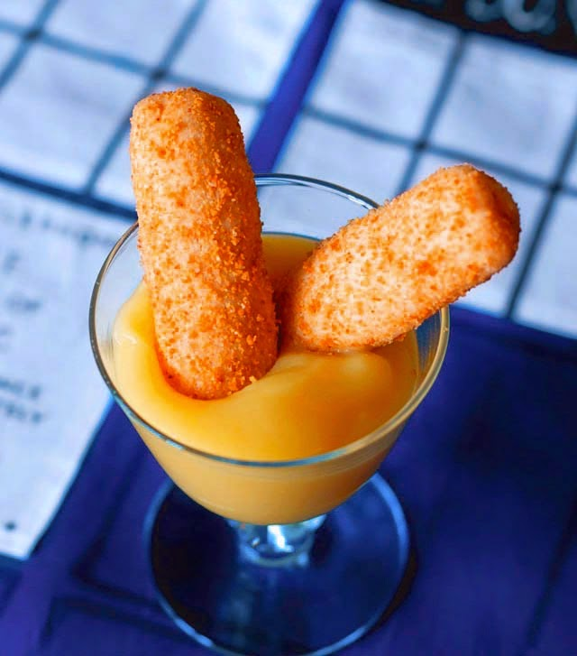

Dr. Who's Fish Finger Custard

Alright, Whovians, you got your wish! Fish Fingers and Custard, also known as Fish Custard.
This a dish enjoyed by the 11th Doctor shortly after his regeneration.
The dish has a sort of emotional relevance to the celebrated relationship between the Doctor and Amelia Pond.
Ingredients:
For the fish fingers:
- 1/2 cup flour
- 2 eggs
- 1 tbs. milk
- 1lb tilapia filets, cut into 1 inch strips (cod or haddock will also work)
- 1 cup of panko breadcrumbs
- 1 cup of coconut flakes
- Frying oil (how much depends on the size of your pan)
- Salt and Pepper to taste
For the custard:
- 1/2 cup mayonnaise
- 2 tbsps yellow mustard (prepared)
- 1 tbsp dijon mustard
- 2 tbsps honey
- 1 tbsp lemon juice
- 2 cloves minced garlic
-